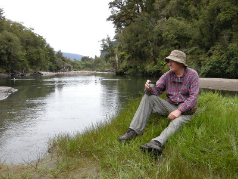
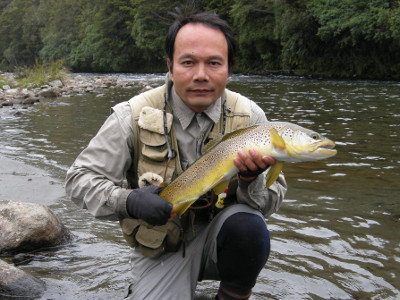
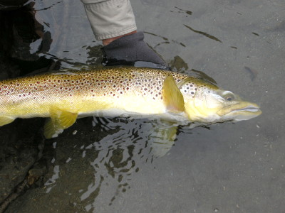

釣行日誌 ＮＺ編 「翡翠、黄金、そして銀塊」
熱いコーヒー
2010/11/30(TUE)-2
本日最初の１尾を無事にキャッチしたことで、思わず安堵のため息がもれた。岸辺にちょうどいい草地があったので、ブリントさんの提案で朝のコーヒーにすることになった。彼の大きなバックパックから取り出した魔法瓶からお湯を注ぎ、インスタントのコーヒーが出来上がった。

左腕に残るブラウントラウトの強い引きの余韻を楽しみつつ、熱いコーヒーを味わう。まさに至福のひとときであった。
さて、次である。少し上流に移動し、瀬でもなし淵でもなしという深みをブラインドで探っていると、淀みと主流の境目の筋で、不意に黒い塊がフライにのしかかって消えた。
『出た！』
心中で叫び、しっかりと間を置いて合わせる。今度もフッキングは十分。鱒の疾走が始まり、水面を走るフライラインがあっという間に向こう岸の流木に近づいてゆく。
「あ～っ！そっちはダメ！」
思わずうめきを上げながら必死に鱒の向きを変えようと試みるが、魚体は流木の下に潜り込み、ロッドから伝わっていた生体反応が消え、無情の沈黙が訪れた。倒木の幹にティペットが絡んだようだ。ロッドをあおっても何も変わらず、固化した重い手応えがあるのみ。
「今度はやられたなぁ」
後ろから近づいて来たブリントさんが声を掛けてくれた。ロッドを倒して上流側に引いたり下流側にあおったり。ウンともスンとも反応は無い。こりゃダメだ、と諦めてラインを持って真っ直ぐに引っ張り、ティペットを切る。さすがに３Ｘは強い。かなり力を入れて引き絞り、ようやく切れて力無くラインが寄ってきた。
「こういうこともあるさ。これも釣りのうち。」
ブリントさんの励ましの言葉を聞きつつ、己の技量の未熟さを痛感しながらティペットを新品に交換し、再び14番のロイヤルウルフを結ぶ。結び目を咥えて濡らしてから締め上げる。これでよし！
しばらく遡行すると、流木帯を抜けて長く続く淵というか荒瀬の下流端に来ていた。しばらく観察していると、浅く広がった水面の真ん中でポツンと波紋が広がる。
『ライズだ！ 今日はドライの日らしい....』
今度は周囲に障害物は無い。水音を立てないように慎重に歩みを進め、ライズリングの真っ直ぐ下流側から射程距離まで近づいてゆく。こんなに浅いポイントなら、鱒の姿が見えても良さそうなものだが、まったく魚影は見えない。山勘でライズのあった場所の少し上流を狙ってキャストする。ふわりと水面に浮かんだフライが、視認性の良い白いウィングを揺らめかせながら流下してくる。が、何も起こらない。
『おかしいなぁ.....』
もう一度、今の筋を狙って投射。流下。黒褐色の頭が不意に水面を割り、ウルフパターンにのしかかる。
「１、２、３、それっ！」
大きく高くロッドを上げ、しっかりとラインを引いて合わせる。よし。ばっちりフッキング！ 茶色の魚影が下流へ突進するが、広がっている瀬の水流は穏やかで、さっきみたいな凶悪な流木群は無い。安心して鱒をいなし、ディスクドラグに助けられながらやりとりを行う。浅場のある右岸側にブラウンを誘導し、ブリントさんが来てくれるのを待つ。やがて追いついた彼が、背負ったバッグパックに取り付けてあったランディングネットを取り外し、丁寧に鱒をランディングした。今日の２尾目である。

下半身？は少々痩せていたが、頭が大きく、背中の張ったブラウントラウトだった。これは仕留めなければ！ というシチュエーションで１尾釣り上げたので、やれやれと安堵した。

水に戻された鱒は、しばらくその場に止まった後に、ゆっくりと身をくねらせて深みの方へと泳ぎ去っていった。
釣行日誌ＮＺ編 目次へ
サイトマップ
ホームへ
お問い合わせ